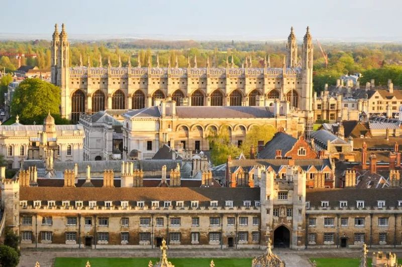

The Cambridge Innovation Ecosystem of 2025: A VC Deep-Dive

This is a deep dive into the Cambridge Innovation Ecosystem of 2025 and how VC affected it. Here are those findings.
The Power of VC in Cambridge
Cambridge is a global tech and science hub, thanks to a strong venture capital presence. From software and biotech to electronics and AI, funding has consistently fuelled innovation here. Networks like Cambridge Wireless and Cambridge Network help connect academics, startups, and investors, while industry giants like AstraZeneca and ARM anchor the ecosystem.
But what does this mean in numbers?
- 45 startup acquisitions (2017–2022)
- 29 IPOs (1999–2022)
- $592M–$2.1B in VC funding (2024) across top UK tech sectors (GenAI, Quantum, Semiconductors, AI Drug Discovery, etc.)
- Cambridge tech ecosystem valued at $191B — 18% of the UK, and larger than Spain and Italy's tech ecosystems combined.
VC clearly drives company growth and exits, but it also plays a more nuanced role.
Cambridge's Unique VC Model
Despite all this success, Cambridge startups often see lower equity valuations than other regions. Why?
- Strong early-stage funding keeps valuations lean
- Heavy focus on licensable technology (rather than scaling businesses)
- Alternative investment models, like Cambridge Enterprise (which licenses IP to spinouts for a mix of equity and royalties as well as investing cash for equity)
The major seed-stage investors include:
- SyndicateRoom (£400K–£5M)
- Hambro Perks (Avg. £1.6M)
- IQ Capital (£1M–£10M)
- CIC (Up to £8.97M)
- Amadeus ($1M–$20M)
At the same time, talent-first VC models (like Entrepreneur First) and legal/administrative support funds (like Cambridge Enterprise) increase available capital but influence how startups grow. The result? Strong seed-stage investment, but companies are often acquired rather than scaled.
What's Next?
This model works well for scientific and deep-tech startups, but it raises a question:
Does Cambridge's investment structure limit how startups scale, pushing them toward acquisition rather than long-term independence?
Would love to hear thoughts from founders, investors, and researchers on this. What has your experience been with VC in Cambridge? And did I get anything wrong? Still doing research on the topic — always glad to go a bit further. Special thanks to Tony Raven for helping clarify certain errors in earlier versions of this post.
Read more
Originally published on LinkedIn — view the original post and discussion ↗.